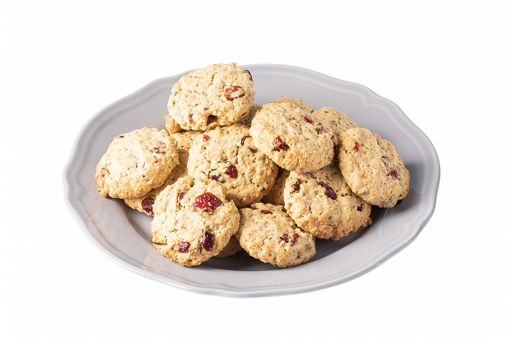

Ингредиенты
- Маргарин - 150 г
- Сахар - 150 г
- Яйцо куриное - 2 штуки
- Пшеничная мука - 220 г
- Овсяные хлопья - 220 г
- Разрыхлитель - ½ чайной ложки
- Соль - щепотка
- Вяленая клюква - 80 г
Инструкция приготовления
-
Взбить размягченный маргарин с сахаром до белесого
цвета.
-
Добавить яйца и перемешать до однородного состояния.
- Всыпать муку, разрыхлитель и соль, перемешать.
-
Добавить овсяные хлопья и клюкву, замесить однородное
тесто, накрыть пленкой и убрать в холодильник на 15
минут.
-
Из теста скатать шарики, выложить их на противень,
покрытый пекарской бумагой, слегка приплюснуть их
ладонью.
-
Отправить в духовку, разогретую до 180 градусов, на 15
минут.